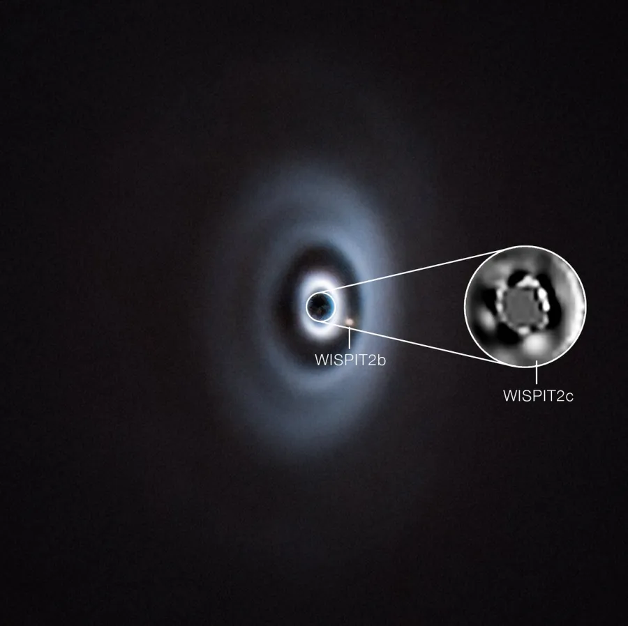

24. März 2026
WISPIT 2: zwei entstehende Planeten in einer Scheibe mit Ringen
In der Scheibe um den jungen Stern WISPIT 2 entstehen zwei Planeten, die direkt beobachtet wurden. WISPIT 2b war 2025 entdeckt worden: knapp fünf Jupitermassen, rund 60-mal so weit vom Stern entfernt wie die Erde von der Sonne. Nun bestätigten das Instrument SPHERE am Very Large Telescope und GRAVITY+ am VLT-Interferometer einen zweiten Planeten. WISPIT 2c ist dem Stern viermal näher und doppelt so massereich.
Nach PDS 70 ist es erst das zweite System mit zwei direkt beobachteten entstehenden Planeten. Beide liegen in Lücken der ausgedehnten, von Ringen durchzogenen Scheibe. Eine weitere, schmalere Lücke könnte auf einen dritten Planeten hindeuten.
Quelle: ESO: "A Solar System in the making? Two planets spotted forming in disc around young star", 24.03.2026